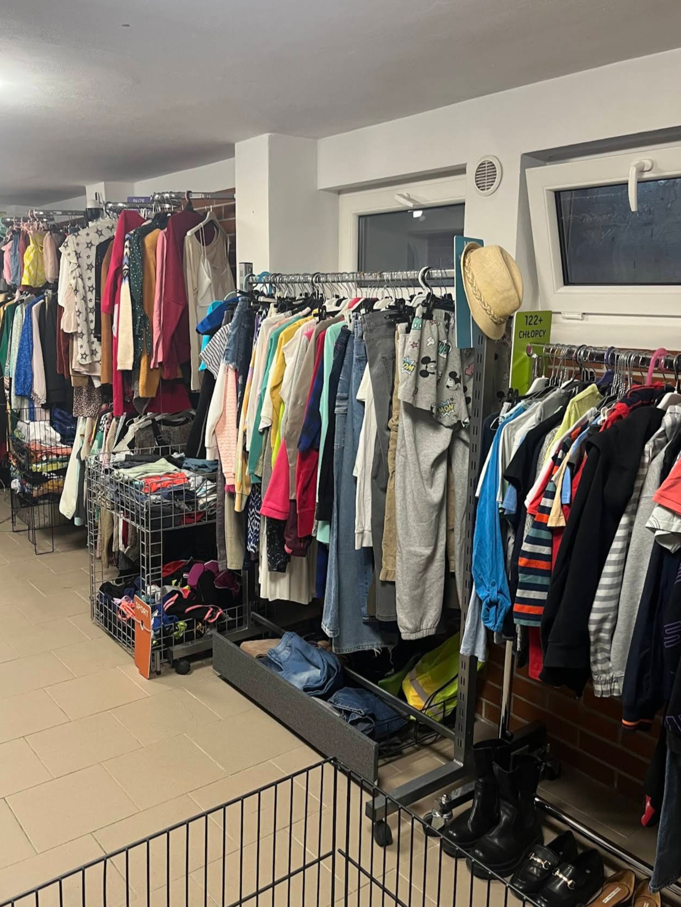

Historia
Dlaczego powstała Podzielnia WOW?
Poznaj naszą misję i cele, które napędzają Podzielnię WOW – od grupy przyjaciół z wielkim eco sercem po miejsce pełne drugich szans.
Czytaj więcej →

WOW! To bardzo proste: przyjdź w godzinach otwarcia do naszej podzielni przy Czumy 6 i weź sobie ZA DARMO coś z naszej kolekcji.
Wszystko bez żadnych opłat – przedmioty w Podzielni WOW służą bezgotówkowej wymianie.
Przyjdź w godzinach otwarcia i weź sobie za darmo coś z naszej kolekcji – ubrania, buty, pluszaki i książki dla dzieci.
Przynieś ubrania w dobrym stanie, które zalegają Ci w szafie, i zostaw je, aby odnalazły nowy dom. Można przyjść bez zapowiedzi.
Podziel się tym, czego nie potrzebujesz, i zabierz to, czego potrzebujesz – bezpłatnie i bez obowiązku zostawiania czegokolwiek w zamian.
To miejsce, gdzie każdy może przynieść ubrania, które są w dobrym stanie, ale zalegają w szafie i zostawić je, aby odnalazły nowy dom. Można przyjść bez zapowiedzi. Liczymy na to, że wyjdziecie z pełnymi torbami.

Odkryj nasze najnowsze wpisy, historie i praktyczne porady, które pomogą Ci ratować planetę przed śmieciową powodzią.
Poznaj naszą misję i cele, które napędzają Podzielnię WOW – od grupy przyjaciół z wielkim eco sercem po miejsce pełne drugich szans.
Czytaj więcej →
Praktyczne porady, dzięki którym Twoje ubrania nie skończą na wysypisku, tylko znajdą nowy dom.
Czytaj więcej →
Dlaczego bezgotówkowa wymiana ubrań to jeden z najprostszych sposobów, by ratować planetę przed śmieciową powodzią.
Czytaj więcej →Zbieramy na czynsz. Możecie wpłacać darowizny:
Stowarzyszenie Podzielnia WOW – Weź, Oddaj, Wymień • tytułem: „darowizna na cele statutowe”